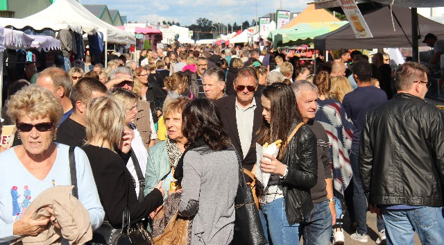
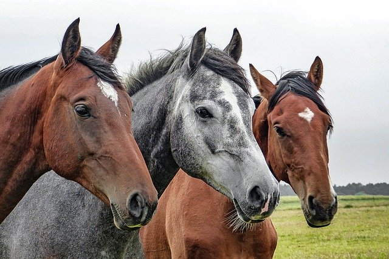
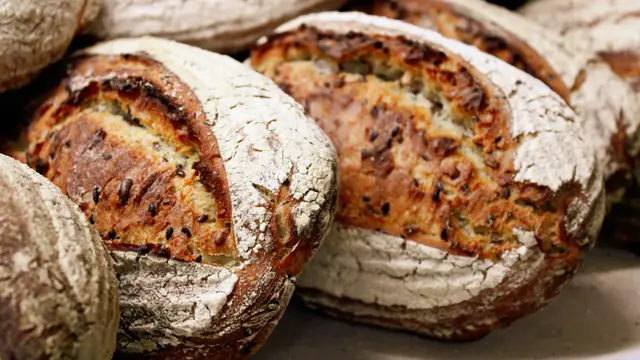
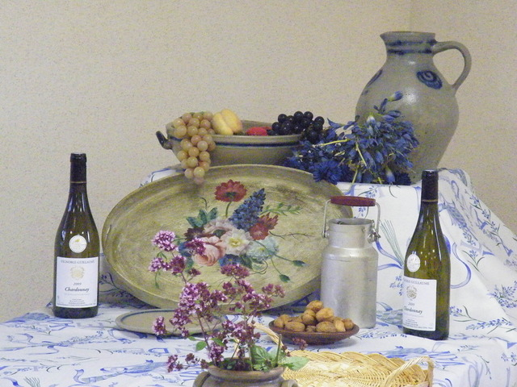

Marchés et foires en Haute-Saône
Nous vous avons préparé une sélection non exhaustive des marchés et foires qui auront prochainement dans notre région. Soyez curieux !
Foire du Lundi de Paques
Le 13/04/2020 - toute la journée
Le Printemps des 4 Sabots
Du samedi 18/04/20 au Dimanche 19/04/20
La Fête du Pain
Le Dimanche 10/05/2020 De 10h00 à 18h00
Le Salon des Vins de Pays de Franche Comté
Le Samedi 20/06/2020
